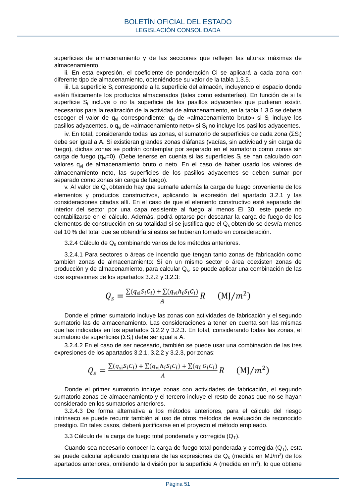

RSCIEI · edición 2025-04-10 · capa asociada
Documento RSCIEI-asociada · SHA-256 del PDF 85aa0af25d51e5b58d8975a4eefbf76d3f57a8933445cfe814ae9c4818a2e3e7
Página física 51 de 108.
Copia fiel del PDF fuente · Fuente oficial
Ficha de la disposición en la fuente oficial
Texto extraído y reorganizado: Basado en datos de la Agencia Estatal Boletín Oficial del Estado. PDF reproducido: Fuente de los datos: Agencia Estatal Boletín Oficial del Estado.
Formato: Texto de la página (Markdown)
superficies de almacenamiento y de las secciones que reflejen las alturas máximas de almacenamiento. ii. En esta expresión, el coeficiente de ponderación Ci se aplicará a cada zona con diferente tipo de almacenamiento, obteniéndose su valor de la tabla 1.3.5. iii. La superficie Si corresponde a la superficie del almacén, incluyendo el espacio donde estén físicamente los productos almacenados (tales como estanterías). En función de si la superficie Si incluye o no la superficie de los pasillos adyacentes que pudieran existir, necesarios para la realización de la actividad de almacenamiento, en la tabla 1.3.5 se deberá escoger el valor de qvi correspondiente: qvi de «almacenamiento bruto» si Si incluye los pasillos adyacentes, o qvi de «almacenamiento neto» si Si no incluye los pasillos adyacentes. iv. En total, considerando todas las zonas, el sumatorio de superficies de cada zona (ΣSi) debe ser igual a A. Si existieran grandes zonas diáfanas (vacías, sin actividad y sin carga de fuego), dichas zonas se podrán contemplar por separado en el sumatorio como zonas sin carga de fuego (qvi=0). (Debe tenerse en cuenta si las superficies Si se han calculado con valores qvi de almacenamiento bruto o neto. En el caso de haber usado los valores de almacenamiento neto, las superficies de los pasillos adyacentes se deben sumar por separado como zonas sin carga de fuego). v. Al valor de Qs obtenido hay que sumarle además la carga de fuego proveniente de los elementos y productos constructivos, aplicando la expresión del apartado 3.2.1 y las consideraciones citadas allí. En el caso de que el elemento constructivo esté separado del interior del sector por una capa resistente al fuego al menos EI 30, este puede no contabilizarse en el cálculo. Además, podrá optarse por descartar la carga de fuego de los elementos de construcción en su totalidad si se justifica que el Qs obtenido se desvía menos del 10 % del total que se obtendría si estos se hubieran tomado en consideración. 3.2.4 Cálculo de Qs combinando varios de los métodos anteriores. 3.2.4.1 Para sectores o áreas de incendio que tengan tanto zonas de fabricación como también zonas de almacenamiento: Si en un mismo sector o área coexisten zonas de producción y de almacenamiento, para calcular Qs, se puede aplicar una combinación de las dos expresiones de los apartados 3.2.2 y 3.2.3: Donde el primer sumatorio incluye las zonas con actividades de fabricación y el segundo sumatorio las de almacenamiento. Las consideraciones a tener en cuenta son las mismas que las indicadas en los apartados 3.2.2 y 3.2.3. En total, considerando todas las zonas, el sumatorio de superficies (ΣSi) debe ser igual a A. 3.2.4.2 En el caso de ser necesario, también se puede usar una combinación de las tres expresiones de los apartados 3.2.1, 3.2.2 y 3.2.3, por zonas: Donde el primer sumatorio incluye zonas con actividades de fabricación, el segundo sumatorio zonas de almacenamiento y el tercero incluye el resto de zonas que no se hayan considerado en los sumatorios anteriores. 3.2.4.3 De forma alternativa a los métodos anteriores, para el cálculo del riesgo intrínseco se puede recurrir también al uso de otros métodos de evaluación de reconocido prestigio. En tales casos, deberá justificarse en el proyecto el método empleado. 3.3 Cálculo de la carga de fuego total ponderada y corregida (QT). Cuando sea necesario conocer la carga de fuego total ponderada y corregida (QT), esta se puede calcular aplicando cualquiera de las expresiones de Qs (medida en MJ/m2) de los apartados anteriores, omitiendo la división por la superficie A (medida en m2), lo que obtiene BOLETÍN OFICIAL DEL ESTADO LEGISLACIÓN CONSOLIDADA Página 51
